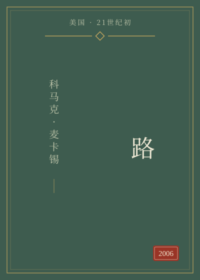
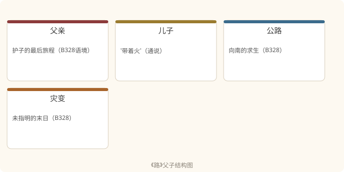

路
一、基本信息
| 作者 | 科马克·麦卡锡 |
|---|---|
| 成书/出版 | 2006年（Britannica B328：The Road (2006)——获2007年普利策奖） Cormac McCarthy — Encyclopaedia Britannica（百科全书） |
| 国别/地区 | 美国 |
| 时代 | 现当代 · 21世纪初 |
| 体裁 | 长篇小说 |
| 语言 | 英语 |

《路》父子结构图（主题·结构图）
二、创作背景
Britannica（B328）：The Road——后末日故事，写父子在未指明的灾变后求生（'Post-apocalyptic tale of a father and son surviving an unspecified disaster'）；获2007年普利策奖。
Britannica（B328）：批评界在其中发现'a new emotional depth and a note of redemption'（新的情感深度与救赎的音符）。
作者页（B328）：麦卡锡此前以《血色子午线》(1985)'hailed as his masterpiece'——本作为其赢得大众声誉阶段的顶点。
三、内容脉络
父子推着购物车沿公路南行：寒冷、饥饿与同类的威胁（B328：father and son surviving an unspecified disaster；行程细节通说待核）。
'带着火'前行——善在废墟中的延续（'火'意象通说待核）。
四、主要人物表
| 人物 | 身份 | 说明 |
|---|---|---|
| 父亲 | 无名 | （通说待核，B328未载名字） |
| 儿子 | 无名 | （通说待核，B328未载） |
五、主题与艺术特点
- 废墟中的父子之情（B328：new emotional depth）。
- '救赎的音符'——末日中的善（B328：a note of redemption）。
- '死亡不可避免'的底色（B328 讣闻语境：a sense of the inevitability of death）。
六、影响与评论
- Britannica：The Road (2006)——2007年普利策奖（B328）。
Cormac McCarthy — Encyclopaedia Britannica（百科全书） - Britannica：'a new emotional depth and a note of redemption'（B328）。
Cormac McCarthy — Encyclopaedia Britannica（百科全书）
七、阅读建议
难点
- 极简文风与无标点对话（风格通说待核）。
- 后末日类型传统。
- 《路》中译本（上海译文等——通说待核）。
- 英文原版。
麦卡锡入门首选；进阶读《血色子午线》。
八、待核实
- 父子无名设定核对（B328未载名字）。
- 2006年出版（Knopf说）待核。
- '火'意象说法待核。
- 2009年电影改编待核。